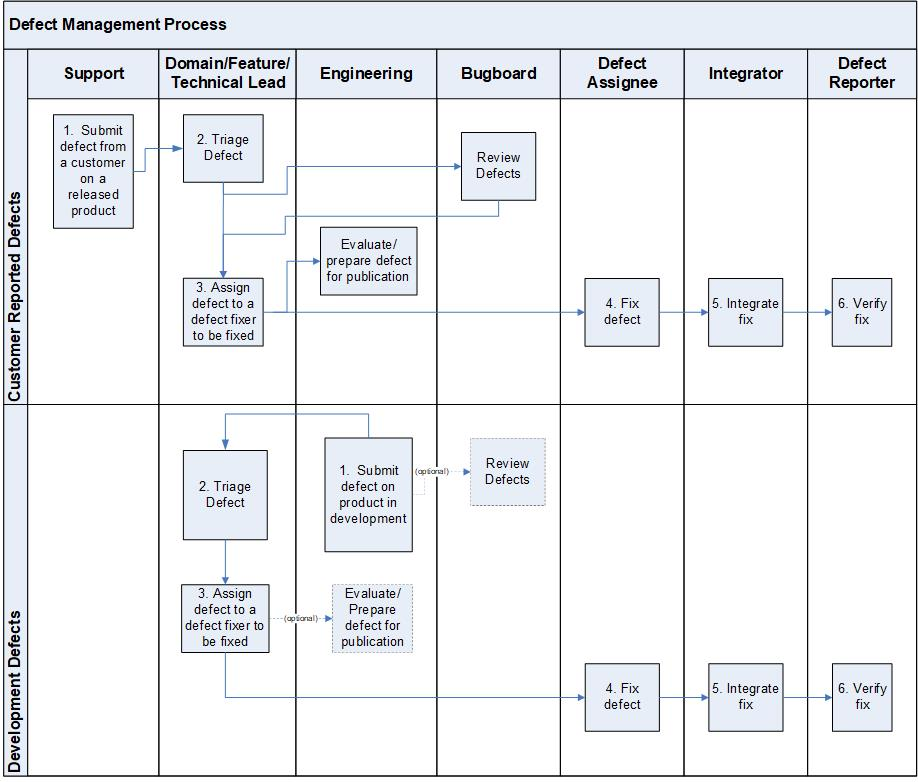

Defect Management Process¶
This process describes the steps in managing defect reports from submission through resolution. Defects are managed in the Defect Management System (e.g., Jira).
The EPM is responsible for ensuring that this process is followed. The Bug Board is responsible for reviewing the defect record and deciding on the bug disposition.
Entry Criteria |
|
Inputs |
|
Exit Criteria |
One of the following happens to the defect:
|
Outputs |
|
Activities¶

Step # |
Activity Name |
Description |
|---|---|---|
1 |
Engineering or a Customer Support Engineer reports a product defect to the responsible engineering component team for resolution. |
|
2 |
Using minimal effort, the Domain/Technical Lead :
Note: Anytime during the defect management process, a defect may be put “On Hold” status due to additional information required to move to the next state. |
|
3 |
The Engineering Manager/Technical Lead/Scrum team assigns defects to defect assignee (developer, tech writer, etc.). In the case of a customer reported defect, it may be necessary for the Domain/Technical Lead to assign the defect for resolution to ensure a timely response. |
|
4 |
The assigned defect assignee (developer, tech writer, etc.) creates, tests, and checks-in a fix for the defect. |
|
5 |
The checked-in fix is integrated and integration tests are performed. Release build includes the integrated fix. |
|
6 |
All fixes are verified on an “official” release build or other distribution image, according to the Defect Fix Verification Policy. |
|
Parallel Activity to 3 |
The Bug Board reviews all open defects (both new and backlog) according to the Bug Board Policy. Once a defect has been resolved, it will not be reviewed. |
|
Parallel Activity to 2-6 |
Preparing a customer defect for publication is the responsibility of the defect assignee. The decision to publish defects follows the Defect Publication Policy. Development defects may optionally be published based on the recommendation of the team. |
Change Log¶
Date |
Change Request ID |
Version |
Change By |
Description |
05/08/2020 |
N/A |
0.1 |
Martin Cote |
Initial Draft |
07/28/2020 |
N/A |
0.2 |
Shree Vidya Jayaraman |
Updates based on Doina & Rodger’s feedback |
08/24/2020 |
N/A |
0.3 |
Shree Vidya Jayaraman |
Updates based on Shawn’s feedback |